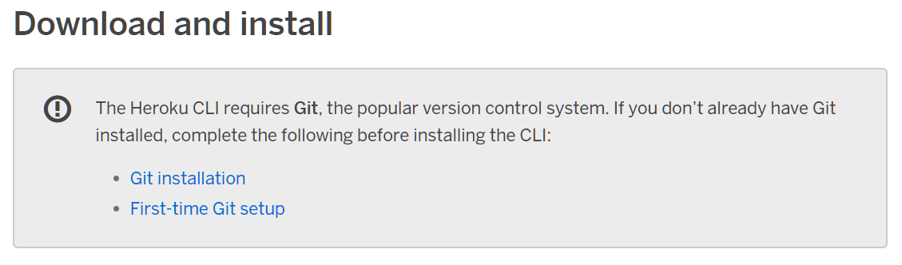
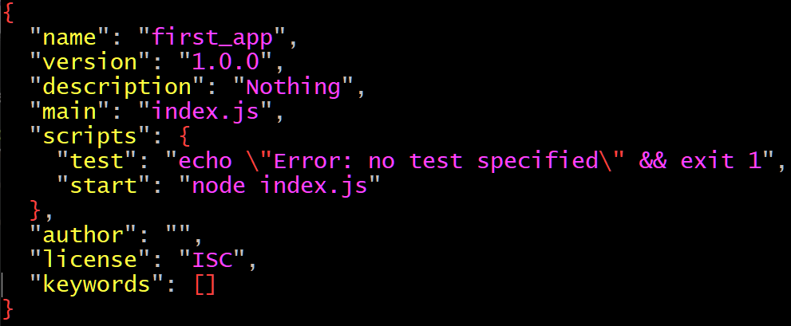

To use W3.CSS in your project it is very simple.
Simply, add this line of code inside the head tag of the html document you want to use W3.CSS in. <link rel="stylesheet" href="https://www.w3schools.com/w3css/4/w3.css"/>
Then, install the Heroku CLI onto your computer by following the instructions at
https://devcenter.heroku.com/articles/heroku-cli.
Make sure to install Git(Ensure to follow first time steps if you haven't installed Git before)
before installing the Heroku CLI if you don't already have it. The link for the Git installation
is available on the Heroku CLI installation website.

After installing Heroku and Git, you must install Node.js which you can do at
https://nodejs.org/en/download/.
When you download Node.js, you automatically download npm as well so you do not need to worry about downloading that as well.
Now that you have the prerequisites for deploying the Node.js framework on to your Heroku server.
Start by opening Git and navigating to the directory you want to create your app.
(You can navigate through directories using the cd DIRECTORY_NAME command.
Next, use the command mkdir DIRECTORY_NAME to make a new directory to hold files for your app.
Again, use the cd DIRECTORY_NAME to navigate inside the directory you just created.
Then use the command npm init -y. This will create a package.json for you.
Next, use your preferred text editor to open the file. For the purpose of the tutorial, the vim editor will be used.
Enter the command vim package.json.
Using the arrows keys you can traverse the text in the vim editor.
You can insert text by typing i.
If you wish to stop typing text, use the Esc key on your keyboard.
This will allow you to input commands such as :w to write the file(save the file) and
:q to exit the file.
Add a comma to the line of code that says "test": "echo \"Error: no test specified\" && exit 1.
Then on the next line, insert the line "start": "node index.js".

Next, write and exit the file. Once you have done this create a new file called index.js
by using the command vim index.js.
In this file, enter the code for your Node.js file. Then write and exit the file.
Enter the commands git init, git add . && git commit -m "init",
heroku create, git push heroku master.